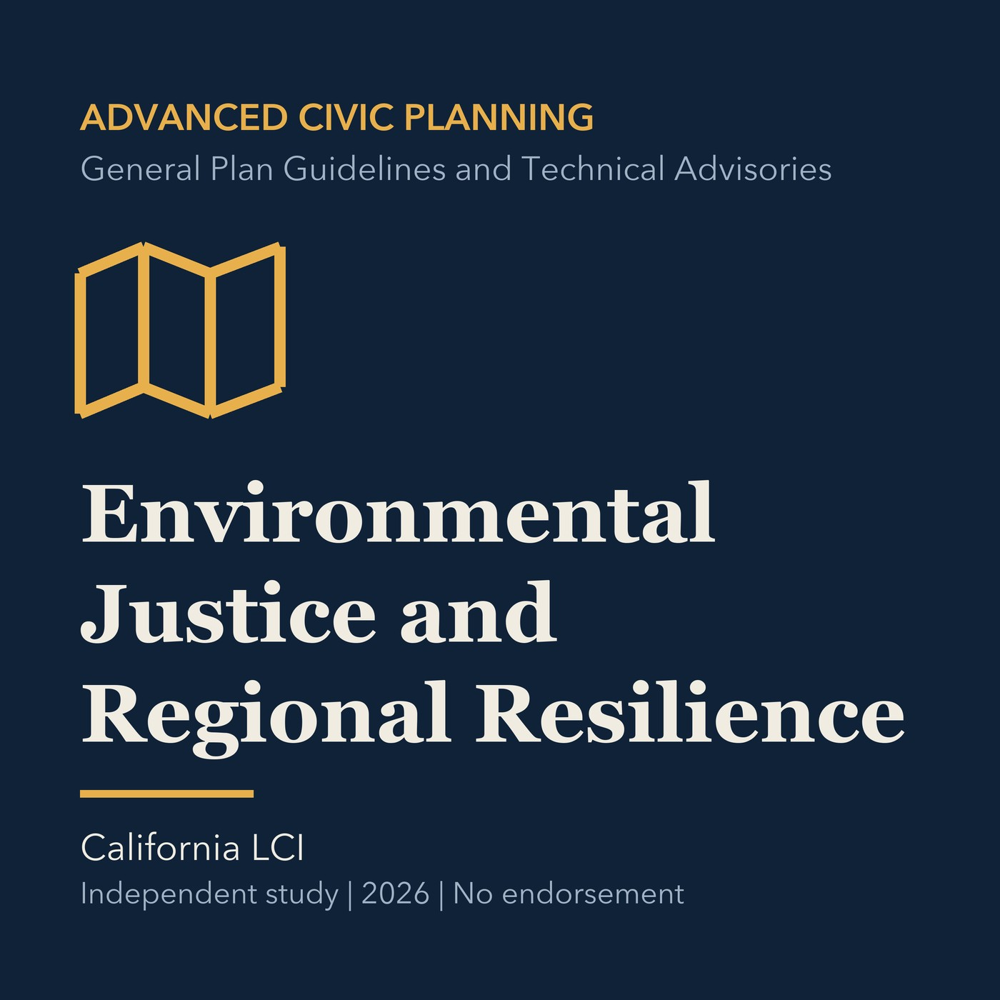

EPISODE 26
Environmental Justice and Regional Resilience
Connects cumulative burdens, participation, investment, and climate resilience in regional planning.

- Stable GUID
a50e733b-f4f0-5043-b37c-c3ce0a437344- Release
- advanced-civic-planning-v2026.2
- SHA-256
59df149ce4031ffdad928b2e449545b662e81c7d460840306d4dd8141278f1ce